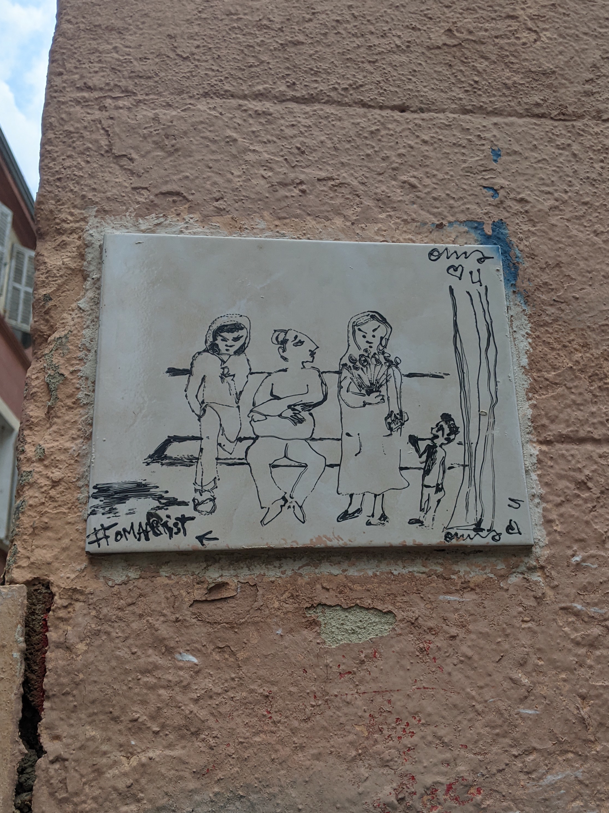

<link rel="shortcut icon" type="image/x-icon" href="../../static/favicon.ico">
<link rel="icon" type="image/x-icon" href="../../static/favicon.ico">
<link rel="apple-touch-icon" href="../../static/favicon.ico">
<link rel="stylesheet" href="../../style.css">

</span>
<button id="toggle" class="top"></button>

<script>
const root = document.documentElement;
const toggle = document.getElementById("toggle");
const darkMode = localStorage.getItem("dark-mode") || (window.matchMedia && window.matchMedia('(prefers-color-scheme: dark)').matches);
if (darkMode) {
  root.classList.add("dark-theme");
}
toggle.addEventListener("click", () => {
  root.classList.toggle("dark-theme");
  if (root.classList.contains("dark-theme")) {
    localStorage.setItem("dark-mode", true);
  } else {
    localStorage.removeItem("dark-mode");
  }
});
</script>
<figure class="single-image">
    
    <figcaption>
    <a class="prev_link" href="bananagrams.html">Previous</a>
Roger, GG, Mimi, and lil' Migi ~ 2025    <a class="next_link" href="marseille_graff.html">Next</a>
    </figcaption>
</figure>
 
